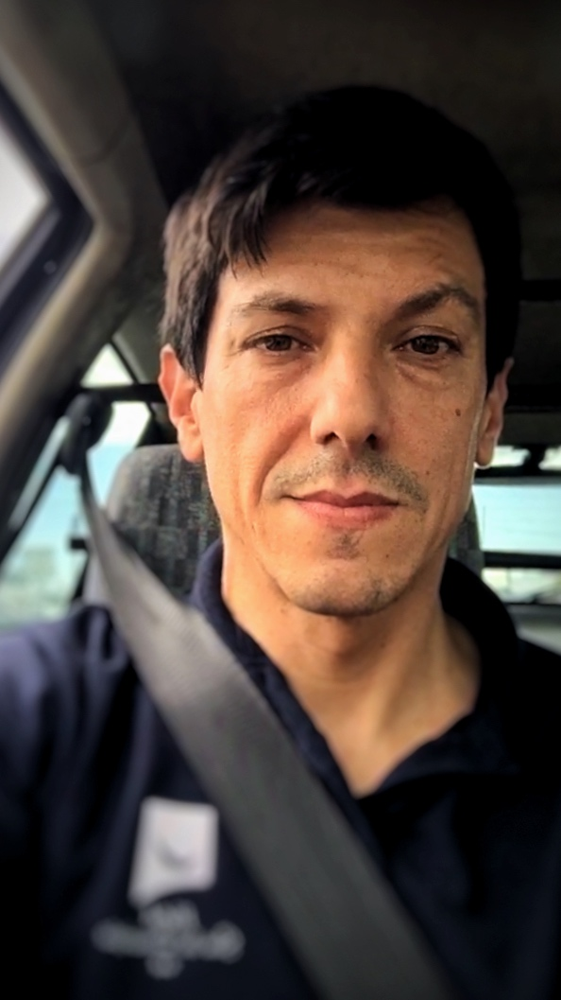

Perfil pessoal

Bio
O Joao é um profissional apaixonado por tecnologia.
Possui uma formação em sistemas de informação e mais de 10 anos de experiência em consultoria, gestão de projectos e implementação de sistemas de gestão, complementadas com competências em programação server-side e gestão de bases de dados.
Formacao Académica
Informática de gestao pela escola de albergaria-a-velha, nível IV
Sistemas de informaçao pela Universidade do Minho, nível V
Formacao profissional
SAP consultant certificate, modelagem e análise de processos
Formaçao pedagógica de Formadores pela escola Tecla de Guimarães
Formaçao em Neuromarketing, pelo IEFP de Aveiro
Marketing digital e comercio eletrónico pela plataforma Coursera
Experiencia
Resumo profissional, incluir aqui Soft Skills e Hard Skills
IS
Projectos de Implementaçao de ERP com QAD, role Consultor de dados e gestao de projectos
Primavera software, Bosch Ovar, Prifer fundiçao, Renolit, Lidl belgium, Asteelflash europe
Web
Participaçao em projectos web com enfase em backoffice , integraçao de dados e interfaces API.
Gestao de Projectos
- Experiencia em gestao de projectos de implementaçao de sistemas ERP para indústria e serviços.
- Consultoria em sistemas de informaçao e apoio à decisao
- Gestao de equipas e optimizaçao de recursos para implementaçao de soluçoes tecnológicas.
Portfolio
Colecçao de alguns trabalhos realizados e colaboraçoes
Software
- Aplicaçao para gestao de reservas e de alojamento em unidade hoteleira (projecto HSDC).
em ambiente local, multiutilizador.
Versao 1 em DbaseIV
Versao 2 em MS Access
Versao 3 com VBA + conexoes SQL
datas: V1 1998; V2 2007; V3 2011
- Add-on RGPD (projecto HSDC/V3)
Funcionalidades RGPD para resposta e tratamento de obrigaçoes legais
Validaçao pelo cliente
Registo de permissoes e consentimentos
data: fev/mar 2018
- Add-on SEF (projecto HSDC/V3)
Funcionalidades de registo de estrangeiros para resposta e tratamento de obrigaçoes legais
Filtragem de dados
Geraçao de relatórios automáticos
Submissao de relatórios em formato PDF e templates SEF.
data: fev/mar 2018
Web
(...)listar principais projectos sobre
Rotinas de suporte backoffice para vários fins
Programaçao server-side
gestao de bases de dados
ERP
(...)listar principais projectos sobre
Analise de processos, modelaçao de dados, implementaçao e configuraçao de sistemas, Formaçao de utilizadores
Projecto mais recente
Implementaçao ERP Asteelflash europe project for Lean manufacturing & supply chain, com metodologia Effective On Board ; Process mapping, Data requirements, modelaçao dimensional, test & acceptance; ciclos end-to-end e Go-live
Interesses
Pessoal
Familia, passeios e viagens
Animais de estimação
Desportos de endurance
Bricolagem e jardinagem em contexto doméstico
Profissional
UX, design de interfaces e desenvolvimento de projetos que combinem funcionalidade, tecnologia e comunicacao visual.
Está a desenvolver competências com ferramentas de IA vocacionadas para tecnologias web, web design e marketing.